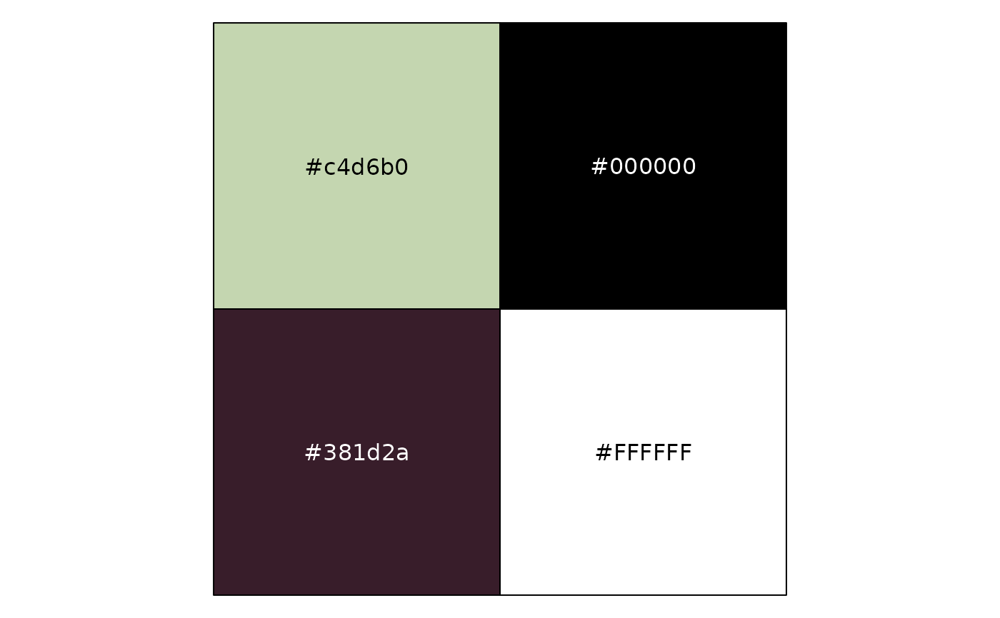

Takes a color input as x and returns either the black or white color (or
expression) if dark or light text should be used over the input color for
best contrast. Follows W3C Recommendations.
Value
The black color or white color according to which color provides
the greates contrast with the input color.
Examples
light_green <- "#c4d6b0"
contrast_green <- choose_dark_or_light(light_green)
dark_purple <- "#381d2a"
contrast_purple <- choose_dark_or_light(dark_purple)
if (requireNamespace("scales", quietly = TRUE)) {
scales::show_col(c(light_green, contrast_green, dark_purple, contrast_purple))
}
